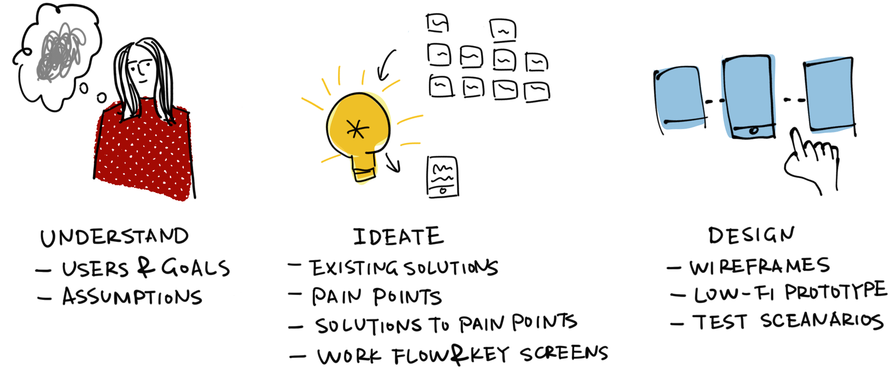
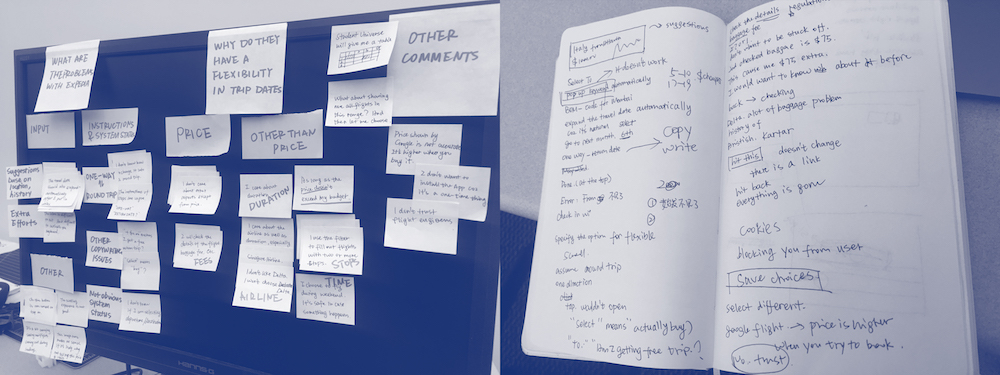
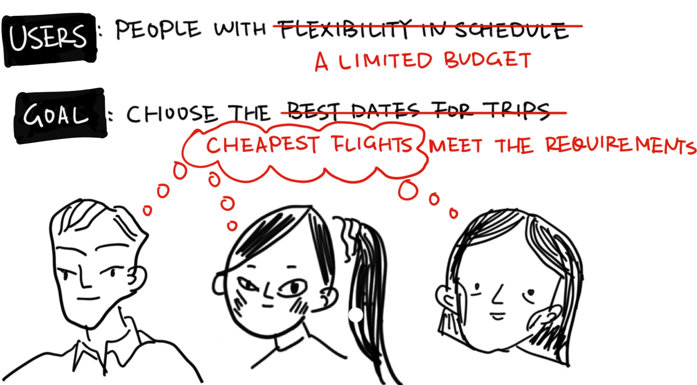
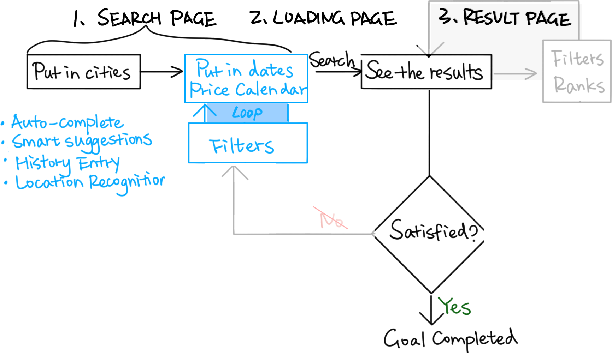

Task
Task
Given the orginal design of Expedia's mobile website, assume people have flexibility in their schedule. Redesign the user experience of Expedia flight search to help people choose the best dates.
My Process

Tools
Sketches on IPad Pro, Sketch, Marvel
User Research
Every design targets at an audience. The first thing I did after given this exercise is to specify the users I should design for and to know them and their goals.
Users and their Goals
Expedia has a wide range of users from all over the world. Obviously there is no perfect design for every single one of them. I did some secondary research in user demographic data of Expedia. And then I talked with several Expedia users to figure our their thoughts.
I coded all the data on post-its and did an affinity map to cluster ideas and gather insights.
Following questions helped me shape my research activity:
- Who does Expedia taget?
Millennials who travel frequently are one of the prime users of Expedia’s mobile website. They prefer to have quick access to flight schedules and look for low prices within flexible dates.
- Which users have flexibility in date and why?
Nearly every one is somehow flexible about dates in order to get cheaper flights.
- What else influences the decision except from price?
Duration/stops, baggage fees, airlines, especially for international flights.
- What are users' goals?
They want to find the best flights with the cheapest price and best service in their acceptable date range in a easy and delightful way.

Persona:
Based on insights I gathered from the research, I built two personas representing the group of people that I designed for - frequent travellers and young adults with a budget.
Assumptions
I made several assupmtions about the users and excluded some scenarios based on the research. This was to narrow down the scope of the problem.
Users have decided the point of depature and the destination.
From my interviews, most of users already have an idea of where to go before searching. So I am not focusing on helping users explore possible destinations. But if a user has a list of destinations, he or she should be able to check the best flight to each of them using my design and then compare by himself or herself.
They will choose either a round trip or a one-way trip.
Multi-city trips happen relatively infrequently compared to round trips and one-way trips. So I decided to not focus on them in this exercise. Multi-city trips can also be splited to several one-way trips, which are covered in my design. But I am really interested in exploring the optimization in the future.
I don't have to worry about technology needed to implement my design.
I did consider some lags in the system but I assumed there were not a lot to worry about.
Ideation
So, back to users and goals, how to help them find the cheapest flights but meanwhile make sure they are satisfied by the cheapest results?
Current Workflow
I walked through the current flight search flow of Expedia's mobile website. For my target users, this is what they go through - a flow with two loops.
Users have to manually check every single combination.
Let's do math. Users have to go through the red loop in the above diagram m*n times at a maximum.
It's even more painful with other usability issues.
#1. No data entry history.
#2. No inline validation and error messages.
#3. Poor auto-complete and suggestions.
#4. Difficulty to use with only thumbs.
(View the full size analysis here).
Industry Trends ... and Their Pain Points
Google Flights, Skyscanner, Kayak are some other popular platforms where users search for flights with flexible dates. They proposed ways to improve the flow but there are still pain points.
Price calendar: significantly reduces the number of red loops when the cheapest flights are satisfying (but they are not).
Pros: Price calendar uncovers the lowest prices, which are just users' interest. They are able to compare the cheapest prices of different date combinations and then make informed decisions.
Pain Points: Users complain that the cheapest flight on the calendar has way more stops, is operated by airlines they don't like. Users still have to go back to the loop.
Show all the flights: eliminates the red loop but also increases the mental effort in blue loop
Pros: Users could see every choice that falls in the date range. And then they could use filter out whichever they don't like and then compare.
Pain Points: Users have to spare more mental effort. And it's challenging to display the flights on different dates and their information on a small screen of phone.
Easy controls: reduce pains in red loops;
Suggestions: sometimes work but sometimes not
A New Flow
Here is the new workflow I proposed - to apply filters to the price calendar.
What if we show users a price calendar after filtering out non-acceptable flights? According to my research, users are bothered the most by flights with a lot of stops, and certain airlines they don't like.
If we let them filter these out when checking price calendar, we could make sure that users could make informed decisions about travel dates.
Key Screens
I roughly sketched out some key screens for the new experience flow and did some experiments of laying out components.
At last I gave up the idea of showing the price in a chart due to the limit of screen size. Users will have to scroll too many times, and they can't see a bigger picture of the price.
Design
What I kept in mind
#1. Users and their goals
#2. The context of a mobile website
#3. Inclusion design for all users - not only for whom with flexibility in dates
Closer Look
Input Suggestions
Price Calendar with Filters
Users could apply filters at any time they want when on this page. It's not necessary to set filters before checking calendar.

Choose the Return First
Some users are more constrainted by the return dates but the current solution only let people select outbound trip first.
Price Alert & Easy Adjustments of Search Input
When loading the results, users could subscribe to the price alerts and wait until when prices drop to the lowest.
Even they change their mind when looking at the research results, they are still able to modify the search quickly and easily.
Reachable and Big Buttons
Interaction & Prototype
At last, I built a prototype to specify the interactions.
Summary
I really enjoyed this exercise with fun and challenge! But it hasn't come to the end.
Future Work and Improvement
In this design, due to the time limit, a lot of my decisions and assumptions were made based on several casual interviews and secondary research. During the design, I also showed the screens to people around and saw if the interactions were intuitive. If permitted, more user research should be done to get solid insights and feedback.
Alternative Design Direction
Another design direction is to improve "show all the flights". First, we could come up with friendly ways for users to put in the date ranges (four dates in total). At the meantime, we could also play around with the layout of components on the result page to reduce users mental effort seeing so many choices.